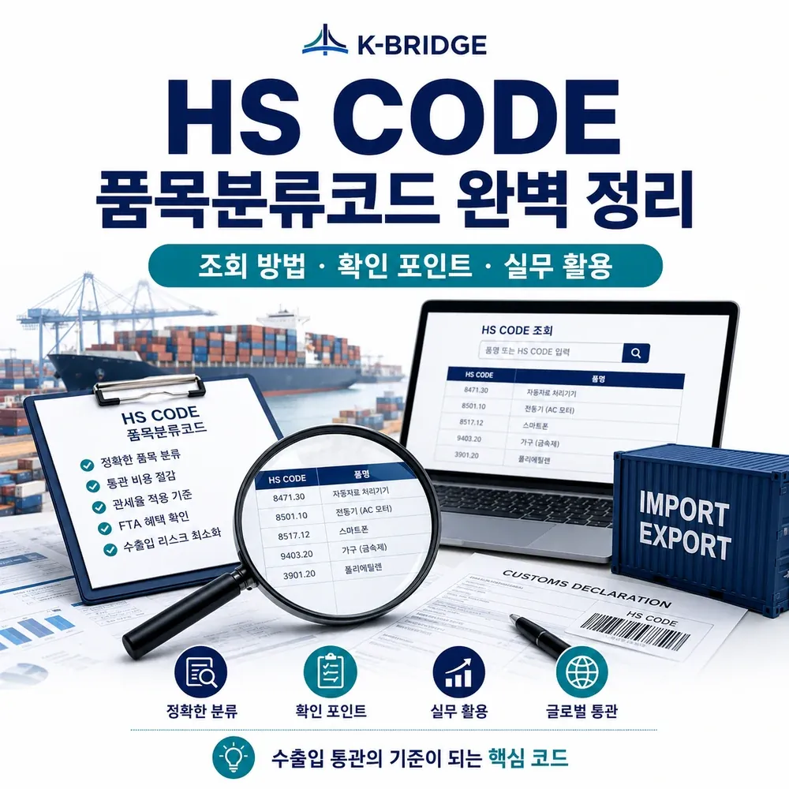
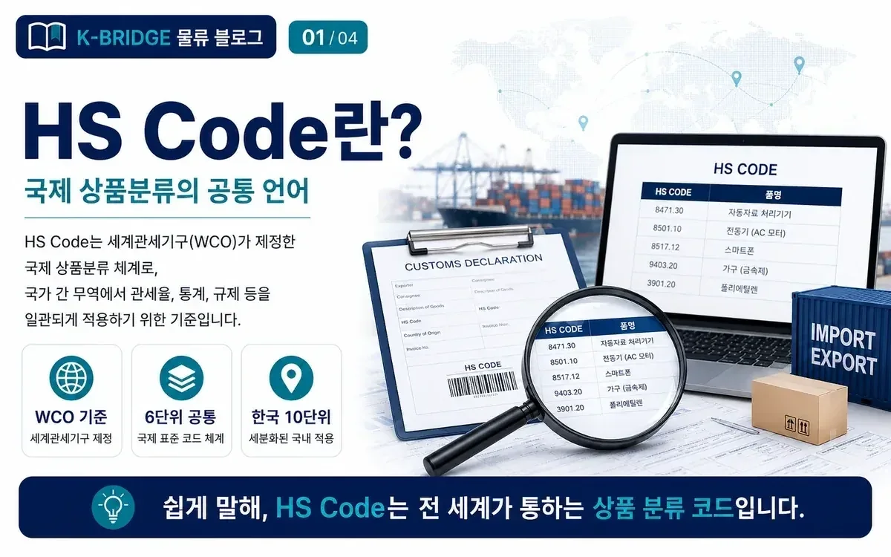
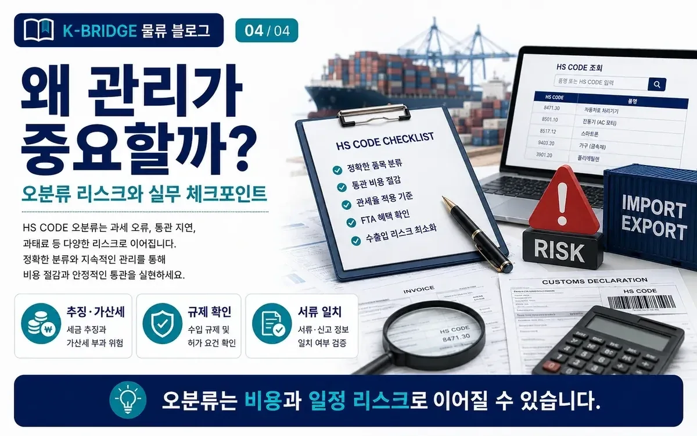
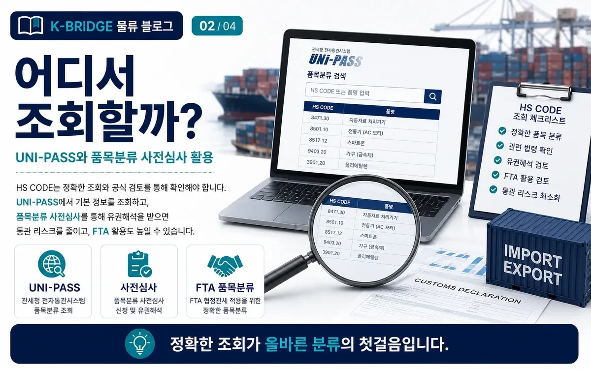
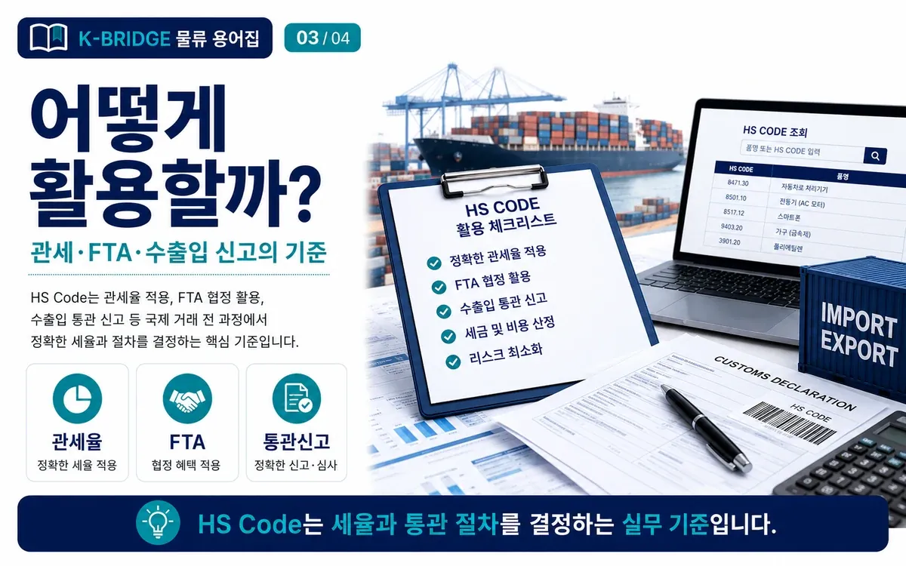

HS CODE(품목분류코드)란? 조회 방법부터 HSK 10자리·FTA 활용까지
수출입 신고, 관세율, FTA 원산지 기준, 수입요건을 확인할 때 가장 먼저 맞춰야 하는 것이 HS CODE입니다. 2026년 현재 유효한 HS 2022 기준과 대한민국 HSK 10단위, 실제 조회 순서를 실무자가 바로 이해할 수 있도록 정리했습니다.

핵심 요약
HS CODE는 국제무역 상품을 분류하는 공통 코드입니다. 국제 공통은 6자리이며 대한민국은 이를 세분화한 HSK 10단위를 사용합니다. 2026년 현재 국제 기준은 HS 2022이고, 품목번호에 따라 관세율·FTA 원산지 기준·통관요건이 달라질 수 있으므로 제품명만 보고 번호를 정하지 말고 재질·기능·용도·구성을 함께 확인해야 합니다.

HS CODE란 무엇인가요?
직접 답변: HS CODE는 세계관세기구(WCO)의 국제통일상품분류체계에 따라 무역되는 상품을 분류하는 코드입니다. 국제적으로 공통 사용하는 핵심 번호는 6자리이며, 각 국가는 자국의 관세·통계 목적에 맞게 뒤에 숫자를 추가해 더 세분화할 수 있습니다.
HS는 단순한 상품번호가 아닙니다. 수입 시 적용되는 관세율, FTA 특혜관세 적용 여부, 원산지결정기준, 세관장 확인대상이나 각종 수입요건, 무역통계 분류가 모두 HS 품목분류와 연결됩니다.
현재 국제무역에서 유효한 HS 명명체계는 HS 2022입니다. WCO는 다음 개정판인 HS 2028 개정안을 확정했으며 2028년 1월 1일부터 시행될 예정입니다.
HS 6자리와 대한민국 HSK 10자리는 어떻게 구성되나요?
핵심: HS는 앞 2자리의 류(Chapter), 4자리의 호(Heading), 6자리의 소호(Subheading)로 세분화됩니다. 대한민국은 국제 공통 6자리 뒤에 4자리를 추가한 HSK 10단위 품목번호를 사용합니다.
류 Chapter
상품군의 큰 범위를 나타냅니다. 예를 들어 기계류, 섬유류처럼 넓은 상품군을 먼저 구분합니다.
호 Heading
류 안에서 물품의 종류와 형태 등을 더 구체적으로 나누는 단계입니다.
소호 Subheading
국제 공통 기준이 되는 6자리입니다. 국가 간 HS 비교는 통상 이 6자리까지가 공통 기준입니다.
HSK
대한민국의 관세·통계통합품목분류표에서 사용하는 10단위 번호입니다.

HS CODE가 중요한 이유
관세율 결정
기본세율, WTO 협정세율, 할당·조정·탄력세율과 FTA 협정관세 적용 여부가 품목번호와 연결됩니다.
FTA 원산지 기준
품목별 원산지결정기준(PSR)은 HS 코드와 기준연도에 따라 달라질 수 있어 협정별 확인이 필요합니다.
수입요건·규제
세관장 확인사항, 인증·검사·허가 대상 여부를 확인할 때 HSK 10단위가 주요 기준으로 사용됩니다.
무역통계
수출입 금액과 물량, 시장규모, 경쟁국 분석 등 통계 역시 HS 분류를 기준으로 집계됩니다.

HS CODE 조회 방법: CLIP에서 이렇게 확인하세요
가장 중요한 원칙: 먼저 제품의 객관적 정보를 정리한 뒤 관세청 관세법령정보포털 CLIP에서 속견표·관세율표·HS 해설서·품목분류 결정사례를 순서대로 확인하는 것이 좋습니다.
- 1. 제품 사양부터 정리
제품명, 재질·성분, 주요 기능, 작동원리, 용도, 제조공정, 구성품과 세트 여부를 준비합니다. - 2. 품목명과 키워드로 범위 검색
CLIP의 세계HS 메뉴에서 품명과 관련 키워드로 후보 류·호·소호를 찾습니다. - 3. 주(Notes)와 HS 해설서 확인
류주·호주·소호주와 HS 해설서를 통해 포함·제외 조건, 물품의 본질적인 특성을 확인합니다. - 4. 품목분류 사례 비교
유사한 제품의 국내 결정사례, 위원회 결정사항, 필요하면 해외 분류사례도 참고합니다. - 5. HSK 10단위와 세율·요건 확인
최종 후보의 HSK 10단위에서 관세율표와 세관장 확인사항, FTA 적용 가능성을 함께 확인합니다.

HS CODE와 관세율·FTA는 어떻게 연결되나요?
수입관세는 단순히 상품명으로 정해지지 않습니다. 어떤 HSK 10단위로 분류되는지, 원산지가 어디인지, 적용 가능한 협정세율이 있는지, 협정의 원산지결정기준을 충족하는지를 순서대로 확인해야 합니다.
일반 수입
- HSK 10단위 확인
- 기본·WTO·탄력세율 등 비교
- 세관장 확인사항과 인증·검사 확인
FTA 특혜관세
- 협정별 품목 양허 여부 확인
- 협정의 HS 기준연도 확인
- 품목별 원산지결정기준(PSR) 충족 확인
- 원산지증명서의 HS 기재 기준 확인
2026년 최신 HS CODE 체크포인트
현재 국제 기준
2026년 현재 WCO가 안내하는 유효한 국제 HS 명명체계는 HS 2022입니다.
한·아세안 FTA
관세청 FTA 포털 안내에 따르면 2026년 5월 1일부터 한·아세안 FTA 원산지증명서의 HS 코드와 원산지결정기준이 HS 2022 기준으로 적용됩니다.
다음 국제 개정
WCO는 HS 2028 개정사항을 공개했으며 2028년 1월 1일 시행 예정입니다. 신기술·신상품 비중이 큰 기업은 연계표 준비가 필요합니다.
품목분류가 애매하면 사전심사를 활용하세요
제품이 복합기능을 가지고 있거나 여러 재질로 구성되어 있거나, 유사 품목의 분류사례가 엇갈려 자체 판단이 어렵다면 품목분류 사전심사를 활용할 수 있습니다. 관세평가분류원은 수출입 신고 전에 신청하면 법령에 따라 품목번호를 결정해 회신하는 제도를 운영하고 있습니다.
신청은 원칙적으로 UNI-PASS에서 전자신고 → 신고서작성 → 품목분류 → 품목분류사전심사신청 순서로 진행합니다. 제품설명서, 카탈로그, 성분표, 도면, 견본 등 분류에 필요한 자료를 충분히 준비하는 것이 중요합니다.
HS CODE 자주 묻는 질문
Q. HS CODE는 몇 자리인가요?
국제 공통은 6자리입니다. 대한민국은 이를 세분화한 HSK 10단위를 수출입 신고와 관세·통계 등에 사용합니다.
Q. 수출자와 수입자가 같은 HS CODE를 써야 하나요?
국제 공통 6자리까지는 동일한 국제 체계를 기반으로 하지만, 7자리 이후 세분류는 국가별로 다릅니다. 실제 수입신고는 수입국 세번과 규정을 확인해야 합니다.
Q. 제품명 검색만으로 HS CODE를 결정해도 되나요?
권장하지 않습니다. 동일하거나 비슷한 제품명이라도 재질, 기능, 용도, 구성에 따라 분류가 달라질 수 있으므로 관련 주와 해설서, 결정사례를 함께 확인해야 합니다.
Q. 잘못된 HS CODE를 사용하면 어떤 문제가 생기나요?
관세 추징, FTA 특혜 배제, 수입요건 누락, 통관 지연, 원산지 검증 대응 문제로 이어질 수 있습니다. 불확실하면 사전심사를 검토하는 것이 좋습니다.
HS CODE 확인부터 수출입 물류까지 함께 준비하세요
케이브릿지는 국제운송 견적과 수출입 물류 실무를 지원합니다. HS CODE 자체 판정이 필요한 경우에는 관세사 또는 관세평가분류원의 공식 품목분류 절차를 함께 활용하는 것이 안전합니다.